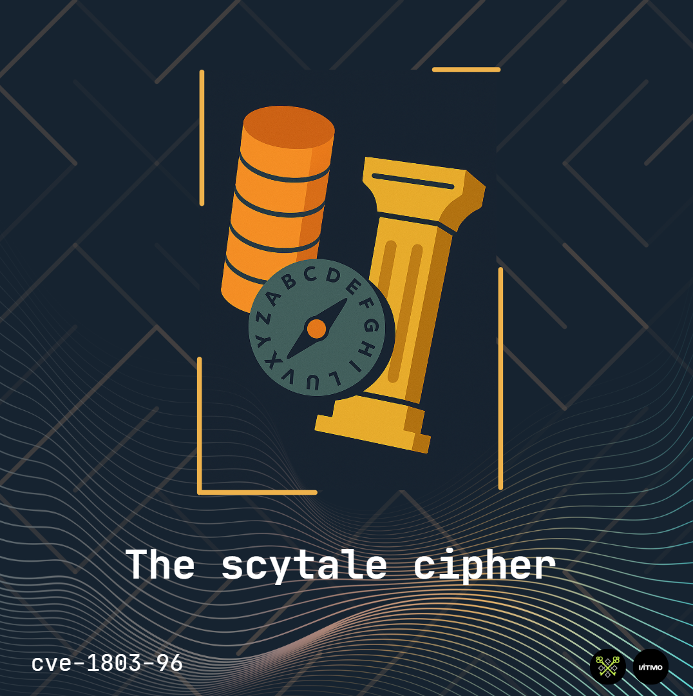

The Scytale cipher
{kind=link}

1. The Scytale Cipher
The Scytale is one of the oldest known cryptographic devices, used famously by the Spartans in ancient Greece. It's a type of transposition cipher, meaning it doesn't change the letters themselves but rearranges their order.
1.1 What is a Scytale?
A scytale is a physical tool, typically a wooden rod or a staff. The sender would wrap a long, thin strip of parchment or leather around the rod in a spiral. The message was then written along the length of the rod. When unwrapped, the parchment appeared to have a scrambled sequence of letters. The receiver, who had a rod of the exact same diameter, would re-wrap the parchment to read the original message.
Key Concept: The security of the cipher relied entirely on both parties having a rod of the exact same diameter. The diameter of the rod is the key.
1.2 How the Scytale Works: The Theory
We can simulate the Scytale cipher using a simple grid or matrix. The diameter of the rod translates to the number of columns in our grid.
Let's break it down with an example.
Our Example Parameters:
- Plaintext:
ATTACK AT DAWN
- Key (Rod Diameter / Number of Columns):
4
- We will ignore spaces for simplicity:
ATTACKATDAWN
2. Encryption (Writing the Message)
- Create the Grid: Imagine a grid with a number of columns equal to your key. Our key is
4, so we have 4 columns.
- Write the Message Row-by-Row: Write your plaintext into the grid from left to right, row by row. If the last row isn't full, you can pad it with null characters (e.g.,
XorZ).Our message
ATTACKATDAWNhas 11 letters. With 4 columns, how many rows do we need?11 letters / 4 columns = 2.75 → We need 3 rows.
Let's fill the grid:
Column 1 Column 2 Column 3 Column 4 A T T A C K A T D A W N Notice the last cell is filled with N. No padding was needed in this case.
- Read the Ciphertext Column-by-Column: To simulate unwrapping the parchment, you read the letters down each column, from left to right.
- Read Column 1:
A,C,D→ACD
- Read Column 2:
T,K,A→TKA
- Read Column 3:
T,A,W→TAW
- Read Column 4:
A,T,N→ATN
- Read Column 1:
- Final Ciphertext: Combine these column readings to form the ciphertext:
ACD TKA TAW ATN(we often write it as a single string:ACDTKATAWATN).
So, ATTACKATDAWN encrypted with a key of 4 becomes ACDTKATAWATN.
🔒 This is web application is able to visualize the process of encryption:
3. Decryption (Reading the Message)
The receiver gets the ciphertext ACDTKATAWATN and has a rod with the same diameter (key of 4).
- Calculate the Number of Rows: The receiver knows the key (number of columns = 4) and the total length of the ciphertext (11 characters). To find the number of rows, they divide the length by the key and round up:
11 / 4 = 2.75→ 3 rows.
- Re-create the Empty Grid: They draw an empty grid with 4 columns and 3 rows.
- Fill the Grid Column-by-Column: This is the reverse of the encryption process. They take the ciphertext and write it into the columns, from top to bottom, left to right.
- Fill Column 1:
A,C,D
- Fill Column 2:
T,K,A
- Fill Column 3:
T,A,W
- Fill Column 4:
A,T,N
The grid now looks identical to the one the sender used:
Column 1 Column 2 Column 3 Column 4 A T T A C K A T D A W N - Fill Column 1:
- Read the Plaintext Row-by-Row: Finally, they read the grid normally, from left to right, row by row: Row 1:
ATTA, Row 2:CKAT, Row 3:DAWN.The original plaintext is revealed:
ATTACKATDAWN.🔓 This is web application is able to visualize the process of decryption:
Scytale Cipher Decryption | CiphercraftDecryption reverses the encryption process to recover the original message:https://cve-1803-96.github.io/ciphercraft/scytale_cipher_dec.html
4. Python Code Implementation
This is an implementation code using python.
def scytale_encrypt(plaintext, key):
"""
Encrypts a plaintext using the Scytale cipher.
"""
# Remove spaces for simplicity, you can choose to keep them
text = plaintext.replace(" ", "").upper()
n = len(text)
# Calculate the number of rows needed
num_rows = (n + key - 1) // key # This is ceiling division
# Pad the text if the last row isn't full (optional, but common)
padded_text = text.ljust(num_rows * key, '○')
# Build the ciphertext by reading columns
ciphertext = []
for col in range(key):
for row in range(num_rows):
index = row * key + col
if index < len(padded_text):
ciphertext.append(padded_text[index])
return ''.join(ciphertext)
def scytale_decrypt(ciphertext, key):
"""
Decrypts a ciphertext using the Scytale cipher.
"""
plaintext = []
text = ciphertext.replace(" ", "").upper()
n = len(text)
# Calculate the number of rows that were used
num_rows = (n + key - 1) // key
for row in range(num_rows):
for col in range(key):
index = col * num_rows + row
if index < len(text):
plaintext.append(text[index])
return ''.join(plaintext).rstrip('○')
plaintext = "ATTACK AT DAWN"
key = 4
print(f"Plaintext: {plaintext}")
print(f"Key (Columns): {key}")
ciphertext = scytale_encrypt(plaintext, key)
print(f"Ciphertext: {ciphertext}")
decrypted_text = scytale_decrypt(ciphertext, key)
print(f"Decrypted: {decrypted_text}")The output of execution:
Plaintext: ATTACK AT DAWN
Key (Columns): 4
Ciphertext: ACDTKATAWATN
Decrypted: ATTACKATDAWNTo understand the encryption function please consider use the slider.
For both encryption and decryption please process please watch this video.
5. Cryptanalysis: How to Break the Scytale Cipher
The Scytale is very weak by modern standards. Here’s why and how to break it:
- Brute-Force Attack: The key is the number of columns. An attacker only needs to try every possible number of columns from 2 up to (roughly) the length of the message. For a message of length
N, there are only aboutN-2possible keys to try. This is computationally trivial.
- Pattern Recognition (Word Shapes): Even without brute force, the ciphertext often reveals patterns. Since the ciphertext is created by reading columns, common letter sequences from the plaintext are broken up and spaced evenly in the ciphertext. A cryptanalyst can look for these patterns or simply try dividing the ciphertext into different numbers of columns until a readable message appears when reading row-by-row.
Example of Breaking it Manually:
Given the ciphertext ACDTKATAWATN and not knowing the key 4:
- Try Key=2: Read into 2 columns? No. Ciphertext length is 11. 11/2=5.5 -> 6 rows. Fill 6 rows, 2 columns and read row-by-row. Result:
A T D C T K A A T W A N-> Gibberish.
- Try Key=3: 11/3=3.66 -> 4 rows. Fill and read. Result:
A T K T A A C A W D T N-> Gibberish.
- Try Key=4: 11/4=2.75 -> 3 rows. Fill and read. Result:
A T T A C K A T D A W N-> "ATTACKATDAWN" -> Success!
5.1 Summary and Key Takeaways
- Type: Transposition Cipher.
- Key: The diameter of the rod, represented as the number of columns.
- Process:
- Encrypt: Write the plaintext row-by-row, read the ciphertext column-by-column.
- Decrypt: Write the ciphertext column-by-column, read the plaintext row-by-row.
- Security: Extremely low. It provides obfuscation but not true security. Its strength in ancient times came from the enemy not knowing the method or the key (rod diameter).
- Historical Significance: It is a fascinating historical artifact that demonstrates early principles of cryptography, specifically transposition.
The Scytale cipher is a perfect starting point for understanding how the order of information can be manipulated to conceal its meaning.
5.2 Understanding the Scytale Cipher Vulnerability
The Scytale cipher is a classical transposition cipher that rearranges letters without changing them. Its main weakness is the extremely small key space - for a message of length N, there are only N-1 possible keys to try.
5.3 Cryptanalysis Approach
1. Brute Force Attack
Since the key is simply the number of columns, we can try all possible values from 2 to N-1.
2. Frequency Analysis
After trying each key, we analyze the resulting text for English language patterns.
3. Dictionary Attack
Check if decrypted text contains common English words.
The implementation of scytale cracker.
def scytale_decrypt(ciphertext, key):
n = len(ciphertext)
plaintext = [''] * n
index = 0
for i in range(key):
for j in range(i, n, key):
plaintext[j] = ciphertext[index]
index += 1
return "".join(plaintext)
ciphertext = "DELSEEOTFAFLESTENTHDWETACHLA"
for k in range(2,len(ciphertext)):
plaintext = scytale_decrypt(ciphertext, k)
print("KEY = ", k ," :",plaintext)